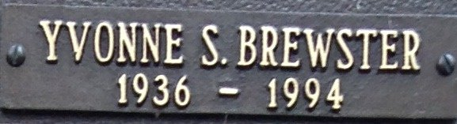

Yvonne Suzanne (Farrell) Brewster
1936 – 1994
Quick Facts
Immediate Family
Parents
- Joseph Farrell
- Marie S. Nicolai
Spouses
- “Miracle” — surname-only spouse entry in a compiled family tree; no first name or marriage record located
- George Ernest Zurline Jr. — 21 Nov 1955 Indiana marriage record
- Eugene E. Brewster — family relationship and children supported; exact marriage date/certificate not located
- Charles Clay Goff — original Tennessee marriage register, 18 May 1970
- Raymond Dean Dukes — 1976 marriage date is compiled-tree only; certificate not located
Children
- Robert A. Brewster (born 22 March 1955)
- Melanie Ann Brewster (born 14 April 1960)
- Martin David Brewster (born 4 November 1961)
Siblings
- Unknown
On Family Tree Sites
Couple Folder
Life Timeline
26 May 1936 · age 0
Born in Cincinnati, Ohio, to Joseph Farrell and Marie S. Nicolai
1950 · age 13 or 14
Living in Norwood, Hamilton County, Ohio
22 Mar 1955 · age 18
Son Robert A. Brewster born, Greenup County, Kentucky
21 Nov 1955 · age 19
Married George Ernest Zurline at Franklin, Indiana, as Yvonne Susan Farrell
1959 (compiled-tree date)
Wuelzer family tree reports marriage to Eugene E. Brewster; no original certificate located
14 Apr 1960 · age 23
Daughter Melanie Ann Brewster born, Hamilton County, Ohio
4 Nov 1961 · age 25
Son Martin David Brewster born, Hamilton County, Ohio
18 May 1970 · age 33
Married Charles Clay Goff at Jellico, Campbell County, Tennessee, as Yvonne Suzanne Brewster; both of Goshen, Ohio
1976 · age 39 or 40
Married Raymond Dean Dukes, per a family tree
14–15 Feb 1994 · age 57
Died as Yvonne Brewster Dukes in Ocean Springs, Mississippi. The Cincinnati Post notice dated 16 February says she died Monday (14 February); Social Security and the marker give 15 February. The original Mississippi death certificate is needed to resolve this.
Life Story
Yvonne Suzanne Farrell was born in Cincinnati, Ohio, on 26 May 1936, the daughter of Joseph Farrell and Marie S. Nicolai. In 1950, at about fourteen, she was living in Norwood, a small city surrounded by Cincinnati. Her Social Security claims record lists several names used during her life, including Miracle, Zurline, Brewster, Goff and Dukes. An Indiana marriage register documents her marriage to George Ernest Zurline in 1955, and a Tennessee register documents her marriage to Charles Clay Goff in 1970. Her relationship with Eugene Brewster and their children are indicated by converging records and family-tree material, but no Eugene–Yvonne marriage record has been located. Her 1994 Cincinnati Post death notice names her as “Yvonne Brewster Dukes” and reports that she died Monday in Ocean Springs; Social Security gives 15 February, one day after that Monday, so the date discrepancy remains explicit.
A compiled family tree gives Yvonne and Eugene E. Brewster a marriage in 1959 and attributes three children to them: Robert (born 22 March 1955 in Greenup County, Kentucky), Melanie Ann (born 14 April 1960) and Martin David (born 4 November 1961), both born in Hamilton County, Ohio. The original Eugene–Yvonne marriage record has not been located. Robert's birth index names Yvonne Farrell as his mother but does not name his father; the other public-record indexes also do not independently establish both parents. Their family relationship is supported by converging family-tree and family records, but the legal marriage date and each child's paternity remain unproven. The marriage did not last. On 18 May 1970, still using the name Yvonne Suzanne Brewster and living in Goshen, Ohio, she crossed into Tennessee and married Charles Clay Goff before a justice of the peace at Jellico.
A compiled family tree lists five spouse entries under her name, but only the Zurline and Goff marriages have civil-record support currently inspected; the Eugene relationship is supported by family and children's records, while the Miracle and Dukes entries still need original marriage records. Her last years were spent on the Mississippi Gulf Coast, where the Cincinnati Post identified her as Yvonne Brewster Dukes. The death date remains disputed: the notice's weekday points to 14 February, while Social Security and the marker give 15 February 1994. Her death notice back home in the Cincinnati Post still called her Yvonne Brewster Dukes, and her funeral Mass was at St. Elizabeth Seton Church in Ocean Springs.
Photo Gallery

Sources and Evidence
- U.S. Social Security Applications and Claims (NUMIDENT), entry for Yvonne Suzanne Farrell, also known as Dukes, Miracle, Zurline, Brewster and Goff: born 26 May 1936, Cincinnati, Ohio; daughter of Joseph Farrell and Marie S. Nicolai; died 15 February 1994, residing in Ocean Springs, Mississippi (zip 39564). Transcription at SortedByName, read 6 November 2026.
- Campbell County, Tennessee, Marriage Record No. 29483: Charles Clay Goff, 28, and Yvonne Suzanne Brewster, 33, both of Goshen, Ohio; licensed and married 18 May 1970 at Jellico by Alex Housley, Justice of the Peace. Image of the original register page, read 6 November 2026.
- Kentucky birth index: Robert A. Brewster, born 22 March 1955, Greenup County, mother Yvonne Farrell. FamilySearch index; also on the same SortedByName page.
- U.S. Public Records Index: Melanie A. Brewster (also Hirano), born 14 April 1960, Ocean Springs, Mississippi (FamilySearch); Martin David Brewster, born 4 November 1961, Okeana and Cincinnati, Ohio (FamilySearch).
- Kollet Family Tree, Yvonne Suzanne Farrell (ref. 289), last updated 19 December 2022: her five husbands, three children with Eugene E. Brewster, the 1950 Norwood census, and an Arlington Memorial Gardens burial (tree lead only; no record cited for most claims).
- Geni, read 2026-11-03: Eugene Brewster profile, listing his wife Yvonne and children Melanie and Robert (tree lead).
- Find a Grave, memorial 134097895, Eugene E Brewster (1933–1983), Greenlawn Cemetery, Milford, Ohio, and the cemetery's Brewster burials: no Yvonne buried there.
- Find a Grave memorial 154652437, "Yvonne Susan Farrell Brewster," 26 May 1936, Cincinnati – 15 Feb 1994, Ocean Springs, Mississippi, Arlington Memorial Gardens, Mount Healthy, Ohio; grave marker photo (DancinSue) reads "Yvonne S. Brewster, 1936 – 1994"; another DancinSue image shows the Whispering Winds scattering-garden sign. The memorial transcribes her death notice from the Cincinnati Post, 16 February 1994, and says she was cremated and scattered in that garden. Its 15 February death date matches Social Security, while the notice says she died Monday, 14 February; preserve the discrepancy. The marker and garden-sign image are memorial/context photos, not portraits of Yvonne.
- Indiana marriage record, Franklin, Indiana, 21 November 1955: George Ernest Zurline and Yvonne Susan Farrell, born 26 May 1936, Cincinnati; bride's mother given as Lorraine Walker. FamilySearch index, read 9 November 2026. Record; identity

Person Archive
Browse the records and materials preserved for Yvonne Suzanne (Farrell) Brewster in the American Bloodline Master Archive.
- Photographs and images
- Family photographs
- Headstone photographs
- Documents and records
- Research notes
- Sources
- Family books
Research Notes and Open Questions
Additional Quick-Fact Details
- Residence: Norwood, Hamilton County, Ohio, in 1950; Goshen, Ohio, in 1970; Ocean Springs, Mississippi, at her death
- Memorial / cremains: Cremains reportedly scattered at Whispering Winds, Arlington Memorial Gardens, Mount Healthy, Ohio (Find a Grave memorial 154652437; memorial marker reads "Yvonne S. Brewster, 1936–1994")
She was cremated and the memorial lists Whispering Winds as the scattering garden. The marker is commemorative; it does not establish a casket burial or individual grave. Cemetery interment/scattering record remains unchecked. She is not in Eugene's Greenlawn plot.
- Marriage to Eugene: FamilySearch has no Eugene–Yvonne marriage for 1952–62 in Kentucky, Ohio or Indiana. Since she married George Zurline in November 1955, search the Hamilton County, Ohio, probate marriage index for 1956–60 under Brewster × Zurline as well as Brewster × Farrell. The family tree's date of 1959 has no record behind it and does not fit another record for one of the children, so it is not used here.
- Divorce: Hamilton County Domestic Relations Court, 1960s, for the decree ending her marriage to Eugene.
- Death: her 1994 Mississippi death certificate would settle 14 versus 15 February. An obituary in the Gulf Coast papers (Sun Herald or Mississippi Press, February 1994), would confirm the place of death and name her children.
- Burial: Arlington Memorial Gardens, Mount Healthy, from her grave marker and Find a Grave memorial 154652437. The cemetery's interment record (513-521-7003) would document it and give the plot.
- Children: Ohio birth certificates for Melanie Ann (1960) and Martin David (1961), and Robert's full Kentucky certificate, would name both parents.
- Find a Grave has no memorial under Yvonne Dukes; she is memorialized as Yvonne Susan Farrell Brewster (memorial 154652437, found 6 November 2026). Her short Cincinnati Post death notice is on that memorial; no fuller Mississippi obituary has been found online. Later obituaries under the name Yvonne Dukes are other women.
- Mother's name: her Zurline marriage record names her mother as Lorraine Walker, while her Social Security record names Marie S. Nicolai. Lorraine Walker may have been a stepmother or a misstatement.
- Not the same person as the British actress and director Yvonne Brewster (born Clarke in Jamaica, 1938).
- No photo of Yvonne herself has been found yet, so her grave marker is shown. Her profile is filed in Eugene Brewster's folder, like other spouses in their partner's folder.
DNA
No DNA matches linked yet.
Family Notes
No family-notes link is listed on this profile.
Profile history: Updated 6 November 2026 with her Social Security record, her 1970 Tennessee marriage record, her children, her other marriages and sources. Updated 9 November 2026 with her Cincinnati Post death notice, her 1955 Zurline marriage record and her cremation.